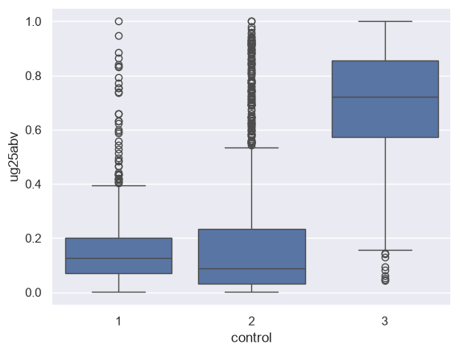
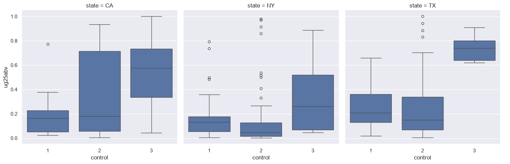
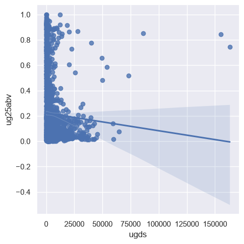
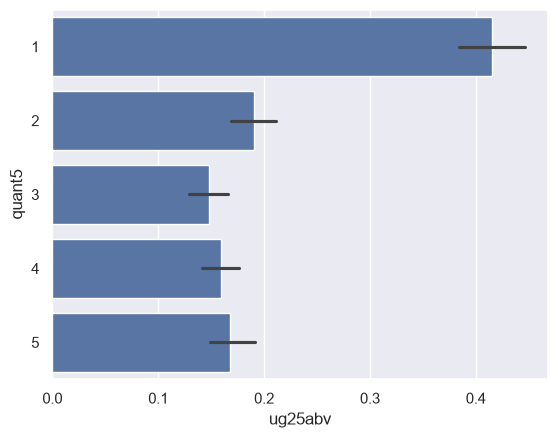
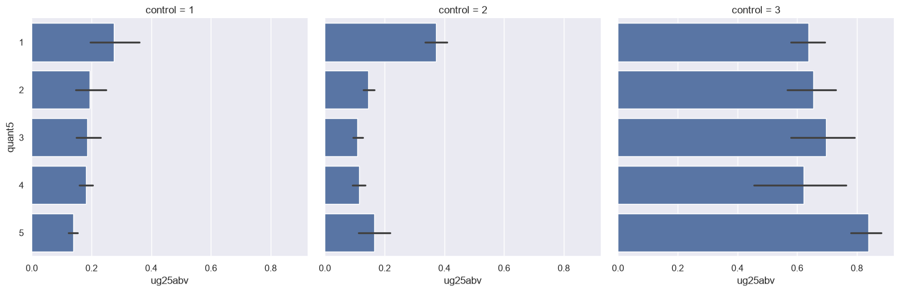

import pandas as pd
full_url = 'https://raw.githubusercontent.com/walkerke/geog30323/main/data/scorecard.csv'
full = pd.read_csv(full_url)
full.shape(6273, 26)
In the last two assignments you’ve explored data with both basic statistical methods and different types of data visualization. While this is a key part of the data analysis process, datasets need to be in the right format before analysts can start drawing meaningful conclusions. The process of preparing data for analysis is called data wrangling, and often takes the bulk of an analysts’ time during a data project. Possible issues might include:
A major reason why you are learning to work with pandas in this course is because it can flexibly handle all of these tasks. In this notebook, we’ll be going over some basic examples of how this works, which you’ll then put into practice with the Exercises at the end.
In this notebook, we’ll be working primarily with the US Department of Education’s College Scorecard dataset. Read in the full dataset with the code below.
import pandas as pd
full_url = 'https://raw.githubusercontent.com/walkerke/geog30323/main/data/scorecard.csv'
full = pd.read_csv(full_url)
full.shape(6273, 26)We see that our data have over 6200 rows and 25 columns - and this is a small subset of the full College Scorecard, which has over 3,000 columns! At this point, while you might not know yet what insights are contained in the data, you will have some sense of the research questions that you are interested in. As your research questions don’t likely require all 26 columns, you can safely restrict your dataset to only those columns that you need for your analysis. Our core research question is as follows:
To accomplish this, we’ll need to identify some columns that we need and subset our data accordingly. The columns we’ll be keeping are as follows:
INSTNM: The name of the institution;STABBR: The state the institution is located in;PREDDEG: The primary type of degree granted by the institution; codes include 1 for certificates, 2 for associate’s degrees, 3 for bachelor’s degrees, and 4 for graduate degrees;CONTROL: The ownership of the institution, coded as 1 for public non-profit, 2 for private non-profit, and 3 for private for-profit;UGDS: The number of undergraduates enrolled at the institution;UG25ABV: The percentage of undergraduates at the institution aged 25 and above.As we discussed in class, pandas includes many different methods for subsetting data; I encourage you to review the corresponding lecture notes for the full set of methods that we discussed. In this notebook, we’ll be focusing on the methods that allow us to accomplish the task at hand, and you’ll be learning a few new methods as well.
To subset our data column-wise, we can specify a list of column names that we want to keep then use the .filter() method to restrict our data to only those specified columns.
keep = ['INSTNM', 'STABBR', 'PREDDEG', 'CONTROL', 'UGDS', 'UG25ABV']
df = full.filter(keep)
df.head()| INSTNM | STABBR | PREDDEG | CONTROL | UGDS | UG25ABV | |
|---|---|---|---|---|---|---|
| 0 | Alabama A & M University | AL | 3 | 1 | 6124.0 | 0.0707 |
| 1 | University of Alabama at Birmingham | AL | 3 | 1 | 11635.0 | 0.1656 |
| 2 | Amridge University | AL | 3 | 2 | 241.0 | 0.8628 |
| 3 | University of Alabama in Huntsville | AL | 3 | 1 | 6591.0 | 0.1511 |
| 4 | Alabama State University | AL | 3 | 1 | 3477.0 | 0.0692 |
Our data are much simpler to work with now! We can already see some noticeable variations in the data; over 86 percent of students at Amridge University are over age 25; however, the university itself is quite small with only 241 undergraduates. These are the types of things we’ll want to account for in our analysis.
You may have noticed that I decided to assign the result of the subsetting operation to a new data frame. Certainly, I could have assigned the result back to the original frame:
full = full.filter(keep)Or:
full.filter(keep, inplace = True)My personal preference when doing data programming is to assign the results of major operations to new data frames, creating a data frame object that represents each step of the analysis, and do minor operations in place. For example, had I assigned the results of the subsetting operation back to full, and I later decided that I needed an additional column from the original data frame, I’d need to read the whole thing in again rather than just add a column name to the list keep. Python will hold all of our data in memory, so it will be accessible to us throughout our Python session; given that our data are relatively small, this won’t cause us any problems. Bigger data workflows might require different methods, however.
There are small things, however, that you can do to your data frame in place to make your lives easier. For example, I don’t really want to hit Caps Lock or the Shift key every time I am typing out column names, but my column names are capitalized. Our column names in our data frame are simply a list of strings, which we’ve learned how to work with already with string methods. As such, we can use list comprehension to convert all of the column names to lower case:
df.columns = [x.lower() for x in df.columns]
df.head()| instnm | stabbr | preddeg | control | ugds | ug25abv | |
|---|---|---|---|---|---|---|
| 0 | Alabama A & M University | AL | 3 | 1 | 6124.0 | 0.0707 |
| 1 | University of Alabama at Birmingham | AL | 3 | 1 | 11635.0 | 0.1656 |
| 2 | Amridge University | AL | 3 | 2 | 241.0 | 0.8628 |
| 3 | University of Alabama in Huntsville | AL | 3 | 1 | 6591.0 | 0.1511 |
| 4 | Alabama State University | AL | 3 | 1 | 3477.0 | 0.0692 |
You’ve also already learned to modify the column names of your data frame by passing in a list of new names. Individual names can be modified as well. For example, I think 'state' makes a lot more sense as a column name than 'stabbr', so I’m going to change it. The following code gets this done:
df.rename(columns = {'stabbr': 'state'}, inplace = True)
df.head()| instnm | state | preddeg | control | ugds | ug25abv | |
|---|---|---|---|---|---|---|
| 0 | Alabama A & M University | AL | 3 | 1 | 6124.0 | 0.0707 |
| 1 | University of Alabama at Birmingham | AL | 3 | 1 | 11635.0 | 0.1656 |
| 2 | Amridge University | AL | 3 | 2 | 241.0 | 0.8628 |
| 3 | University of Alabama in Huntsville | AL | 3 | 1 | 6591.0 | 0.1511 |
| 4 | Alabama State University | AL | 3 | 1 | 3477.0 | 0.0692 |
The rename data frame method takes a dictionary of values, which is a Python data structure that we haven’t discussed yet. Dictionaries, or dict objects as they are often called, are enclosed by curly braces ({}) and are made up of key/value pairs. In turn, they can really come in handy when working with paired values; we may return to them later in the semester. As this is a minor change to the data frame, the argument inplace = True makes sense to modify df directly.
We now want to subset our data even further. As mentioned above, the preddeg column designates the primary degree granted by the colleges and universities in the dataset. We’re interested in comparing primarily bachelor’s-granting universities, which have the code of 3; in turn, we want to tell pandas to keep only those rows where the preddeg column is equal to 3. First, let’s check our dtypes to see if the columns is formatted as a string or number:
df.dtypesinstnm str
state str
preddeg int64
control int64
ugds float64
ug25abv float64
dtype: objectIt appears as though preddeg is an integer, so we will work with the values as numbers. To subset rows in pandas, we can use the .query() data frame method. .query() requires an expression to be evaluated by Python using boolean/logical operators. The method will then return those rows for which the result of the expression is True, and drop those rows that return False. In this case, we want all of those rows for which the value of the preddeg column is equal to 3. Let’s create a new dataframe, called ug for undergraduate, from this expression.
ug = df.query('preddeg == 3')
ug.shape(1947, 6)We’ve gone from over 6200 colleges & universities down to 1947.
As mentioned in class, missing data in pandas are designated with the value NaN, which refers to “not a number.” Data analysts need to take missing data seriously, as they could be representative of a systematic flaw in the dataset. You can check for missing values in pandas with the .isnull() method. Let’s query our undergradate data frame to check to see how many rows in our dataset have missing values for our column of interest, ug25abv.
ugnull = ug.query('ug25abv.isnull()')
ugnull.shape(56, 6)It looks like we have 56 rows with null values for the ug25abv column. Let’s see what universities they are:
ugnull| instnm | state | preddeg | control | ugds | ug25abv | |
|---|---|---|---|---|---|---|
| 466 | Yeshiva Ohr Elchonon Chabad West Coast Talmudi... | CA | 3 | 2 | 163.0 | NaN |
| 516 | United States Air Force Academy | CO | 3 | 1 | 4114.0 | NaN |
| 649 | PENSACOLA CHRISTIAN COLLEGE | FL | 3 | 2 | NaN | NaN |
| 677 | Talmudic College of Florida | FL | 3 | 2 | 27.0 | NaN |
| 936 | Telshe Yeshiva-Chicago | IL | 3 | 2 | 78.0 | NaN |
| 1399 | New England College of Optometry | MA | 3 | 2 | NaN | NaN |
| 1997 | Yeshiva of Far Rockaway Derech Ayson Rabbinica... | NY | 3 | 2 | 60.0 | NaN |
| 2025 | Jewish Theological Seminary of America | NY | 3 | 2 | 172.0 | NaN |
| 2027 | Kehilath Yakov Rabbinical Seminary | NY | 3 | 2 | 205.0 | NaN |
| 2085 | Rabbinical College Bobover Yeshiva Bnei Zion | NY | 3 | 2 | 473.0 | NaN |
| 2107 | Sh'or Yoshuv Rabbinical College | NY | 3 | 2 | 156.0 | NaN |
| 2148 | Talmudical Seminary Oholei Torah | NY | 3 | 2 | 400.0 | NaN |
| 2149 | Talmudical Institute of Upstate New York | NY | 3 | 2 | 13.0 | NaN |
| 2167 | Webb Institute | NY | 3 | 2 | 106.0 | NaN |
| 2175 | Yeshivath Shaar Hatorah | NY | 3 | 2 | 76.0 | NaN |
| 2177 | Yeshivath Viznitz | NY | 3 | 2 | 1159.0 | NaN |
| 2457 | Rabbinical College Telshe | OH | 3 | 2 | 50.0 | NaN |
| 2584 | University of Western States | OR | 3 | 2 | 0.0 | NaN |
| 2615 | Curtis Institute of Music | PA | 3 | 2 | 109.0 | NaN |
| 2767 | Talmudical Yeshiva of Philadelphia | PA | 3 | 2 | 112.0 | NaN |
| 3533 | Yeshiva Gedolah of Greater Detroit | MI | 3 | 2 | 75.0 | NaN |
| 3758 | Rabbi Jacob Joseph School | NJ | 3 | 2 | 115.0 | NaN |
| 3946 | Yeshiva D'monsey Rabbinical College | NY | 3 | 2 | 84.0 | NaN |
| 4048 | Yeshiva College of the Nations Capital | MD | 3 | 2 | 56.0 | NaN |
| 4089 | Atlantic Institute of Oriental Medicine | FL | 3 | 2 | NaN | NaN |
| 4156 | Franklin W Olin College of Engineering | MA | 3 | 2 | 377.0 | NaN |
| 4230 | Beis Medrash Heichal Dovid | NY | 3 | 2 | 206.0 | NaN |
| 4301 | Uta Mesivta of Kiryas Joel | NY | 3 | 2 | 2957.0 | NaN |
| 4444 | Yeshiva Toras Chaim | NJ | 3 | 2 | 227.0 | NaN |
| 4445 | Talmudical Seminary of Bobov | NY | 3 | 2 | 602.0 | NaN |
| 4878 | Bais HaMedrash and Mesivta of Baltimore | MD | 3 | 2 | 87.0 | NaN |
| 4884 | Be'er Yaakov Talmudic Seminary | NY | 3 | 2 | 765.0 | NaN |
| 4970 | Yeshiva Gedolah Kesser Torah | NY | 3 | 2 | 84.0 | NaN |
| 4972 | Yeshiva Yesodei Hatorah | NJ | 3 | 2 | 75.0 | NaN |
| 5095 | Rabbinical College Ohr Yisroel | NY | 3 | 2 | 114.0 | NaN |
| 5135 | Yeshiva Sholom Shachna | NY | 3 | 2 | 130.0 | NaN |
| 5235 | Beth Medrash of Asbury Park | NJ | 3 | 2 | 124.0 | NaN |
| 5302 | Yeshiva Bais Aharon | NJ | 3 | 2 | 25.0 | NaN |
| 5316 | Yeshiva Ohr Naftoli | NY | 3 | 2 | 47.0 | NaN |
| 5362 | Yeshiva Gedolah Tiferes Boruch | NJ | 3 | 2 | 81.0 | NaN |
| 5372 | Yeshiva Gedolah of Cliffwood | NJ | 3 | 2 | 30.0 | NaN |
| 5375 | Yeshivas Emek Hatorah | NJ | 3 | 2 | 90.0 | NaN |
| 5432 | Yeshiva of Ocean | NY | 3 | 2 | 63.0 | NaN |
| 5641 | Justice University | AZ | 3 | 2 | 116.0 | NaN |
| 5651 | Yeshiva of Kasho | NY | 3 | 2 | 185.0 | NaN |
| 5661 | Yeshivas Sanz Klauzenburg | NY | 3 | 2 | 98.0 | NaN |
| 5718 | Arizona College of Nursing - Chesapeake | VA | 3 | 3 | 149.0 | NaN |
| 5719 | Arizona College of Nursing - Hartford | CT | 3 | 3 | 334.0 | NaN |
| 5721 | Arizona College of Nursing-St Louis | MO | 3 | 3 | 131.0 | NaN |
| 5722 | EDvance College | CA | 3 | 2 | 201.0 | NaN |
| 5736 | Virginia Christian College | VA | 3 | 2 | NaN | NaN |
| 5739 | Congregation YMH | NY | 3 | 2 | NaN | NaN |
| 5747 | Northpoint College | MI | 3 | 2 | NaN | NaN |
| 5786 | UTH Florida University | FL | 3 | 3 | NaN | NaN |
| 5788 | West Coast University-Los Angeles | CA | 3 | 3 | NaN | NaN |
| 5790 | Herzing University-Clarksville | TN | 3 | 2 | NaN | NaN |
Interesting! It looks like primarily we’ve returned Jewish yeshivas, along with the U.S. Air Force Academy, a few graduate colleges - e.g. New England College of Optometry, which is designated as a bachelor’s granting institution but has no undergraduates - and some institutions that appear to have been mis-coded. This reveals why careful inspection of your data is important. Missing values often aren’t at random, but instead may be systematic or clustered amongst a particular type of record in your dataset. Additionally, it looks like we’ve uncovered some errors in the original data as well.
In this case, let’s go ahead and drop these records from our dataset. Recall from class that there are other options available for missing data as well; you can fill the NaN values with some other value if appropriate, such as 0 or the mean of the column. We’ll drop these values using .query() again, but instead with the .notna() pandas method. This method will identify the rows that are not NaN in the ug25abv column, and retain only those rows.
ug_nonull = ug.query('ug25abv.notna()')
ug_nonull.shape(1891, 6)I can also use the .dropna() method, which we learned in class. One thing about .dropna() is that it can operate over the entire data frame if we don’t pass it any columns. Let’s check it out:
ug1 = ug.dropna()
ug1.shape(1891, 6)We get the same result, which tells us that there weren’t any rows with null values in the ugds column that we hadn’t already dropped.
In class, we discussed the “split-apply-combine” approach to data analysis. This approach involves:
While conceptually simple, this approach to data analysis is extraordinarily powerful - and extremely common! For example, let’s say you are working in analytics for a business, and your supervisor wants you to compare sales results of your stores by region. This is a very common request when working with data professionally, and fortunately pandas can help you out with this with minimal code.
Let’s start with a couple guiding questions.
Group-wise data analysis in pandas is conducted by the creation of a groupby object, in which you tell pandas exactly how the data should be grouped. To address the first question, we’ll want to group our data by institution type. The code below gets this done.
groups1 = ug1.groupby('control')
type(groups1)pandas.api.typing.DataFrameGroupByNotice the object type - Python knows that our new object, groups1, represents grouped data. In turn, anything we calculate over this object will apply to each of our groups, defined by unique values of the control column. Let’s try:
groups1.ug25abv.mean()control
1 0.166248
2 0.187823
3 0.665443
Name: ug25abv, dtype: float64Interesting stuff - whereas public and private non-profit colleges and universities are pretty similar in their age composition, with 17-19 percent of their student bodies above age 25, private for-profit universities are quite different, with two-thirds of their undergraduates aged over 25.
Let’s visualize this with seaborn, which also sets up very nicely for group-wise data analysis. Box plots and violin plots, for example, can be extended by specifying a second column for the plot.
import seaborn as sns
sns.set(style = "darkgrid")
sns.boxplot(data = ug1, x = 'control', y = 'ug25abv')
We can get a clear sense here of the variations of the distributions between the groups. While the mean percentage of undergraduates above 25 at public non-profits was below that of private non-profits, it appears as though the median for private non-profits is lower; there is simply a longer tail of private non-profits with large proportions of their student bodies above 25. For private for-profits, the distribution is quite evident - with the median value above 70 percent.
seaborn includes even more functionality for group-wise visualization - incorporating, in some instances, multiple groups! We’ll learn more about this later in the semester when we focus on data visualization; however we can take a look right now. The catplot function in seaborn allows you to split categorical plots such as point (the default), box, violin, bar, or strip plots into separate smaller charts, to facilitate comparisons across groups.
Let’s create a new subsetted data frame, sub1, by indexing our ug1 data frame for only those colleges and universities that are located in New York, Texas, and California. We then call the catplot function, specifying how to divide our plots into small multiples with the col = 'state' argument.
sub1 = ug1.query("state in ['NY', 'TX', 'CA']")
sns.catplot(data = sub1, x = 'control', y = 'ug25abv',
col = 'state', kind = 'box', order = [1, 2, 3])
Now, we want to look at how the percentage of undergraduates over age 25 varies by institution size. Certainly, we could create a scatter plot as both the ug25abv and ugds columns are numeric:
sns.lmplot(data = ug1, x = 'ugds', y = 'ug25abv')
The regression line suggests an inverse relationship; however the clustering of dots suggests (potentially) a non-linear relationship, and there are several outliers. For example:
ug1.query('ugds > 150000')| instnm | state | preddeg | control | ugds | ug25abv | |
|---|---|---|---|---|---|---|
| 1796 | Southern New Hampshire University | NH | 3 | 2 | 163164.0 | 0.7462 |
| 4026 | Western Governors University | UT | 3 | 2 | 155088.0 | 0.8424 |
Southern New Hampshire University and Western Governors University, each with over 150,000 students, stand out as distinct outliers - and notice that both are coded as private non-profits, not for-profits. Additionally, a scatter plot is not the only way that we can assess this relationship. We can convert our data from quantitative to categorical, and in turn assess variations amongst the categories.
Creating a categorical column from a quantitative column requires computing a new column in our data frame, which will be a common part of your workflow in pandas. As you learned in class, you can use basic mathematical operations to create new columns from existing ones. In this example, we are going to organize our universities into bins based on their size, and then compare universities across those bins.
pandas includes a lot of methods for creating new columns; we’re going to discuss here options for organizing our data into bins. The three options are as follows:
Equal interval and manual breaks are available via the cut() function in pandas; quantiles are available from the qcut() function. Let’s create a new column with the .assign() method that organizes the values in ugds into five quantiles, labeled with 1 through 5 which we accomplish with range():
ug_quantiles = ug1.assign(quant5 = pd.qcut(ug1.ugds, 5, labels = range(1, 6)))
ug_quantiles.head()| instnm | state | preddeg | control | ugds | ug25abv | quant5 | |
|---|---|---|---|---|---|---|---|
| 0 | Alabama A & M University | AL | 3 | 1 | 6124.0 | 0.0707 | 5 |
| 1 | University of Alabama at Birmingham | AL | 3 | 1 | 11635.0 | 0.1656 | 5 |
| 2 | Amridge University | AL | 3 | 2 | 241.0 | 0.8628 | 1 |
| 3 | University of Alabama in Huntsville | AL | 3 | 1 | 6591.0 | 0.1511 | 5 |
| 4 | Alabama State University | AL | 3 | 1 | 3477.0 | 0.0692 | 4 |
We can now make comparisons by quantile if we want. Let’s try a bar chart; seaborn’s barplot function will calculate group means and plot them, and give us an indication of the uncertainty around that mean with an error bar:
sns.barplot(x = 'ug25abv', y = 'quant5', data = ug_quantiles)
We can analyze this further by breaking out the bar charts by college type with sns.catplot():
sns.catplot(data = ug_quantiles, x = 'ug25abv', y = 'quant5', col = 'control', kind = 'bar')
Our results appear quite different when we break them out by college type! This starts to reveal the importance of detailed investigation of your data through visualization; we’ll be exploring this much more later in the semester. We can also take a look at the numbers behind these plots by creating a groupby object that groups by control and the quantiles:
groups2 = ug_quantiles.groupby(['control', 'quant5'])
groups2.ug25abv.mean()control quant5
1 1 0.274223
2 0.194794
3 0.186778
4 0.180929
5 0.138311
2 1 0.372717
2 0.145920
3 0.109607
4 0.113939
5 0.165309
3 1 0.638164
2 0.654021
3 0.696762
4 0.621008
5 0.839400
Name: ug25abv, dtype: float64You’ll now complete some exercises so you can practice what you’ve learned. Your job, in general, is to replicate the analysis above, but for a different column in the dataset. You’ll be analyzing the column PCTPELL, which denotes the percentages of students receiving Pell Grants, a federal grant program to help students pay for college. Unlike loans, Pell Grants do not need to be repaid.
While you’ll be using a lot of the code I provided for you and modifying it slightly, make sure that you know what the code is doing at every step! You are welcome to use Colab’s embedded AI assistant. My recommendation: try each exercise first on your own, then use AI when you get stuck or to help explain something.
Exercise 1: Similar to what you did earlier in the notebook, create a data frame that is subsetted for the columns 'INSTNM', 'STABBR', 'PREDDEG', 'CONTROL', 'UGDS', and 'PCTPELL', and that retains only those rows where PREDDEG is equal to 3, representing primarily bachelor’s-granting universities. What is the mean, median, maximum value, and minimum value of the PCTPELL column?
# Your code goes here!
Double-click and answer here.
Exercise 2: How many null values are contained in the PCTPELL column in your subsetted data frame? Once you’ve found this out, drop them from your data frame.
# Your code goes here!
Double-click and answer here.
Exercise 3: Compare the means of PCTPELL by the different groups of CONTROL (the college/university type). Draw a visualization that shows how the distributions vary.
# Your code goes here!
Double-click and answer here.
Exercise 4: Draw a visualization that breaks your visualization from Exercise 3 down by state with catplot, similar to what you did earlier in the notebook; in this instance, however, compare Texas with Florida and Illinois.
# Your code goes here!
Exercise 5: Show how the percent of students receiving Pell Grants varies by institution size and institution type (public, private, for-profit). Break up the UGDS column into five quantiles in your data frame as you did before, and then compare the means of PCTPELL by institution type by institution size. Draw a visualization with catplot to show this graphically.
# Your code goes here!
Double-click and answer here.
Exercise 6: In Exercise 1, you calculated the mean of PCTPELL across bachelor’s-granting institutions. Here’s a question about that number: is it the share of students who receive Pell Grants, or the share of colleges?
It’s the second one - every institution counts once, whether it has 200 undergraduates or 150,000. Now calculate the first one. You’ll need to create a new column: the number of Pell recipients at each institution, which is PCTPELL multiplied by UGDS. Then divide the total number of Pell recipients by the total number of undergraduates.
Compare the two numbers. Why are they different? Which one would you report if the Department of Education asked you “what share of undergraduates receive Pell Grants?”, and which one would you report if a college president asked you “how does my school’s Pell share compare to other schools?”
# Your code goes here!
Double-click and answer here.
To submit your assignment, click the Share button and share your assignment with kwalkertcu@gmail.com.